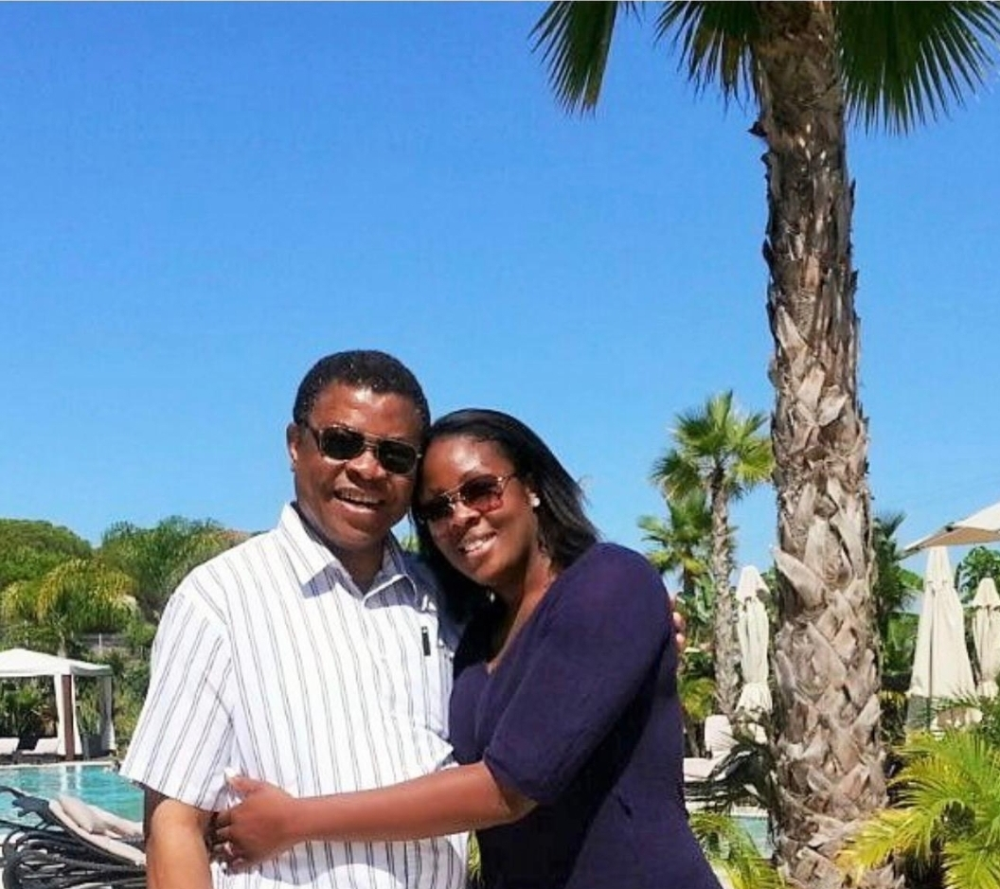
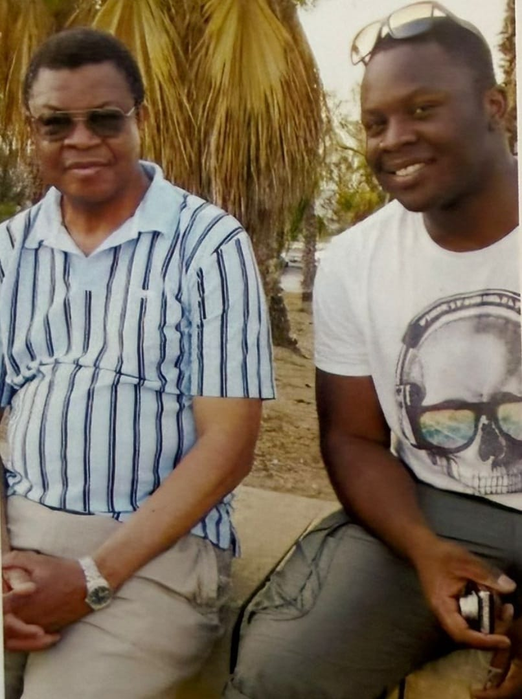
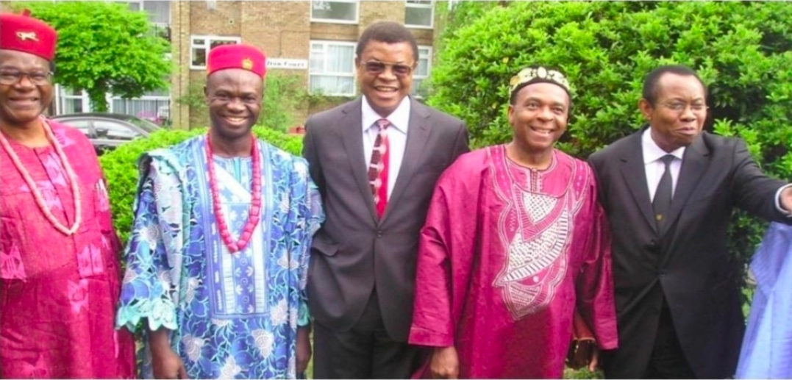
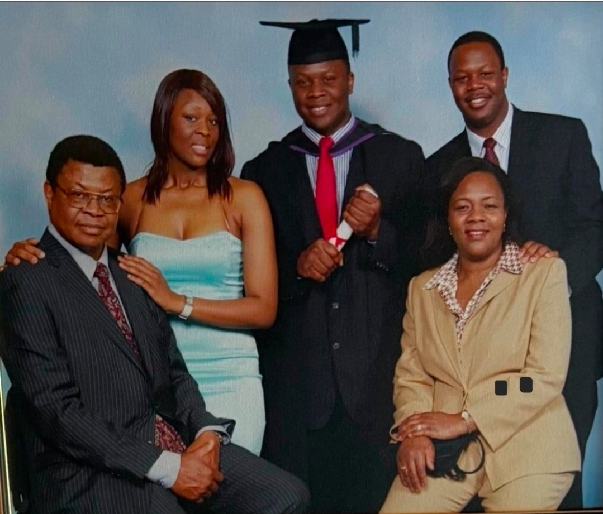
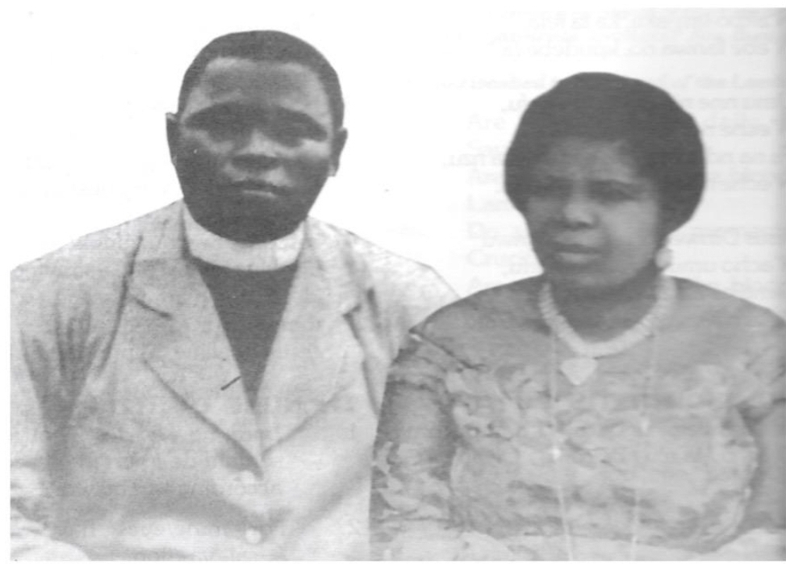
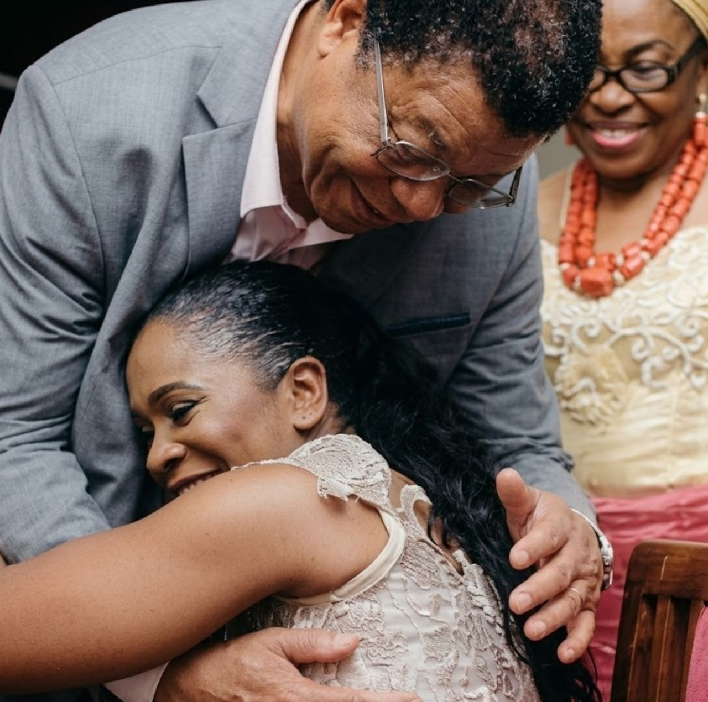
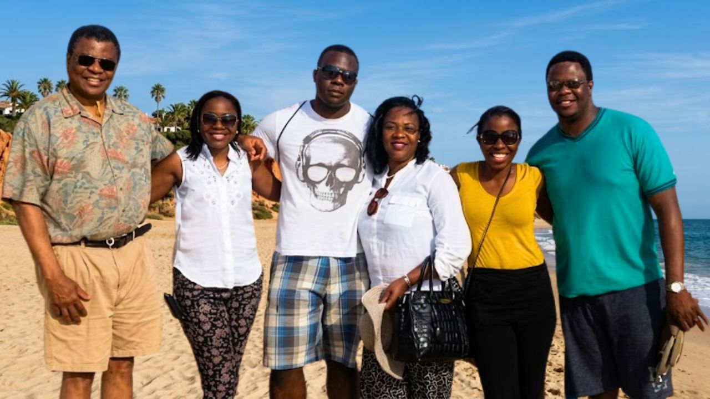
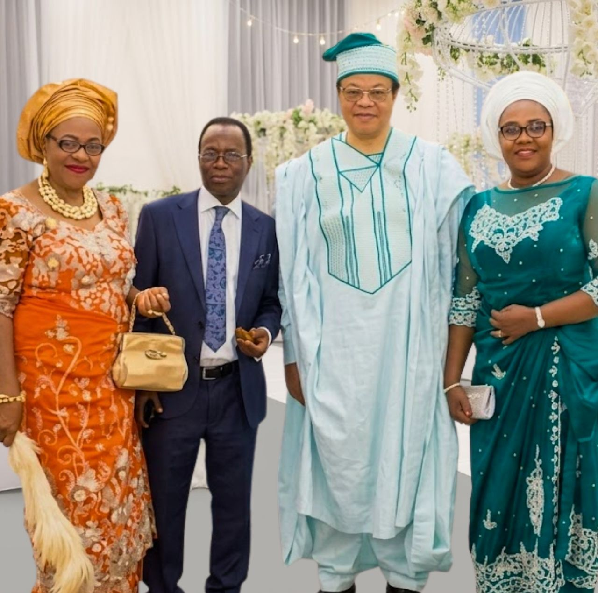
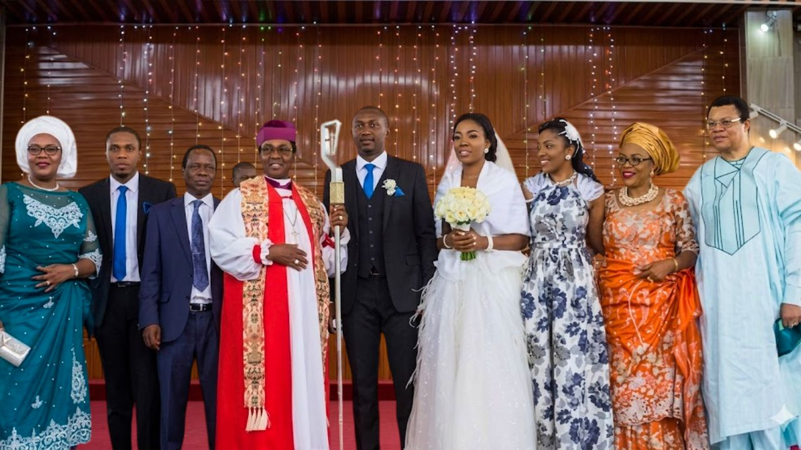

MD FRCP — Physician, scholar, and Fellow of the Royal College of Physicians. A life defined by excellence, service, and an unwavering commitment to education.
James Kenechukwu Onwubalili (known as “JK”) was born on 24 April 1947 in Imo State, Nigeria. His father, an Anglican priest, died when James was three, so he was raised by his mother and three older sisters. The Church played an important role in his upbringing; he joined the church choir at age seven. After attending his local primary school, James earned a place at Government College Umuahia, an elite secondary school where he excelled academically and at sports.
His undergraduate studies at the University of Ibadan were interrupted by the Biafran civil war. During the conflict he joined the Biafran army, rising to the rank of captain, and returned to complete his medical education after the war. James was an outstanding student; he won several prizes and qualified MB BS in 1975 with distinction, receiving the prize for best all-round graduate. The Royal College of Physicians biography notes that he remained at the top of his class and, in his final year, collected medals for medicine, obstetrics, child health and pathology.
James’ early postgraduate training was at the University of Nigeria Teaching Hospital. In 1978 he moved to England to continue his training; his first post there was as a renal senior house officer (SHO) at Hammersmith Hospital. He subsequently worked as a renal SHO at Northwick Park Hospital, gained the Membership of the Royal College of Physicians (MRCP) in 1979, and served as a renal registrar at the old 3Ps institute (St Peter’s, St Paul’s and St Philip’s hospitals) from 1979 to 1981. James was then appointed Medical Research Council research fellow at Northwick Park; his research on immunity in tuberculosis earned him an MD degree in 1985.
While working in London he married Vivian Eruchalu in 1981; they had two sons (James and David) and a daughter (Chioma). In 1984 he returned to Nigeria and set up the first dialysis unit in Enugu, pioneering both haemodialysis and peritoneal dialysis services and training a new team of dialysis nurses and technicians. He also chaired the committee that combated a Lassa fever outbreak in 1989 and served as director of postgraduate education at the University of Nigeria medical school (1986–1989).
In 1989 James moved to Saudi Arabia to work as a consultant nephrologist, while his wife and children returned to England to continue their education. In 1995 he was appointed consultant physician and nephrologist at the North Middlesex Hospital in London, where he collaborated with the Royal London Hospital to establish a new haemodialysis unit. For several years he was the hospital’s only nephrologist and became a strong advocate for better renal-care access for patients from ethnic minorities.
James remained deeply committed to medical education. He was a Royal College of Physicians tutor, an examiner for the MRCP PACES examination from 2002 until his retirement, and an associate professor for medical students from St George’s University, Grenada. His colleagues describe him as a gentle, dignified physician who inspired loyalty and affection from patients and staff.
Dr. Onwubalili’s exceptional contributions to medicine were recognised with numerous prestigious awards and honours throughout his career:
He was elected a Fellow of the Royal College of Physicians, one of the most distinguished honours in British medicine, recognising his outstanding contributions to medical practice and scholarship.
He was awarded the Gold Medal by the Royal College of Physicians of Ireland, a rare and prestigious honour bestowed upon physicians who have made exceptional contributions to the advancement of medicine. The Royal College of Physicians biography highlights that JK passed the MRCP with the highest score among candidates at the time and published extensively in peer-reviewed journals, with interests extending beyond medicine to music and the natural world.
Beyond his professional achievements, Dr. Onwubalili was a devoted family man. He married Dr. (Mrs.) Vivian Onwubalili (née Onyemelukwe), herself a distinguished medical professional. Together, they raised a family that continues to uphold the values of excellence, service, and education that defined his life.
James was delighted when all three of his children entered medical school, qualifying from University College London Hospitals. His sons, Dr. Emeka Onwubalili and David Onwubalili, carry forward his legacy — Emeka as an NHS consultant and David as a communications professional. The family remains deeply committed to ensuring that Dr. JK’s belief in the transformative power of education continues to change lives through the Foundation.
Dr. James Kenechukwu Onwubalili died peacefully at home on 4 May 2017 surrounded by his family. Tributes from colleagues and former trainees emphasise his patience, enthusiasm for teaching and enduring pride in his children.
In July 2023, his family established the James Kenechukwu Onwubalili Foundation to ensure that his belief in educational empowerment would continue to change lives for generations to come. The Foundation operates in both the United Kingdom and Nigeria, providing scholarships to academically gifted but financially disadvantaged students.
His legacy lives on in every student who receives the opportunity to pursue their educational dreams through the Foundation that bears his name.









Help continue the work that Dr. James Kenechukwu Onwubalili believed in so deeply — empowering the next generation through education.
Support the Foundation